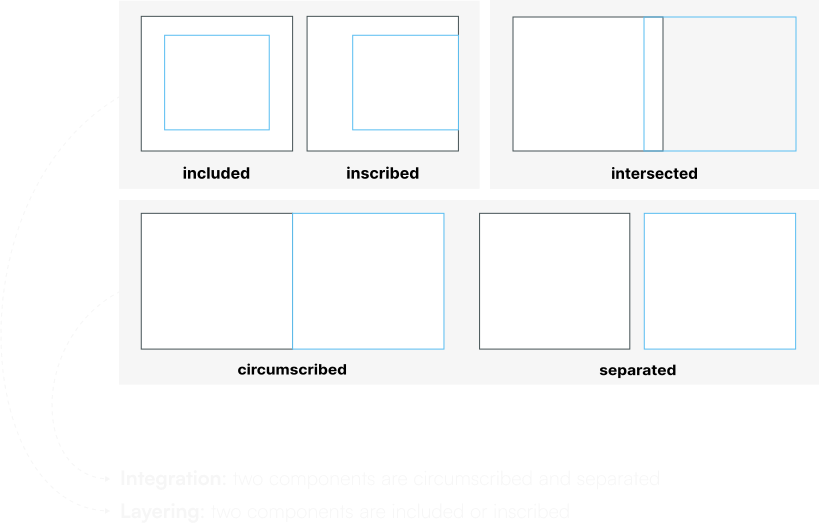

DESIGNER
Muxing Chen
KEYWORD
#Visualizing Complexity
#Visual Composition
#Composition Framework
#Composite Visualization
#Visual Composition
#Composition Framework
#Composite Visualization
ADVISOR
Paolo Ciuccarelli
Complex datasets (such as heterogenous, large-scale, spatiotemporal data, etc.) are becoming more increasingly accessible, as we are able to generate, collect and store greater quantities and varieties of information. However, no single visualization is optimal for all possible tasks. To address this challenge, a strategy called composite visualization combine multiple single visual representations in the same visual space in order to display different aspects of the complex dataset.
Composite visualization consists of multiple component visualizations and a set of relations between them. This thesis project focuses on developing a composition framework that identifies ten composition patterns, based on the relations between component visualizations and with which we can classify and deconstruct composite visualization.
The thesis starts by contemplating what are the fundamental relations between component visualizations.



Fig 3. Ten composition patterns defined by spatial relations and data relations between two visualizations

Item-to-item layering pattern is defined as one visualization overlays on another visualization that shares related data items. The above composite visualization is a typical example of this pattern, and one way to deconstruct it is to break it down into a scatter plot, a network diagram, and data glyphs. (Click to view more information about composition patterns and corresponding examples)